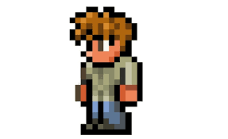

-El guia
El Guía es el primer NPC que te encontrarás en el mundo. Sus consejos son principalmente para que los nuevos jugadores aprendan lo básico del juego. Aparece al crear el mundo pero si muere, no aparecerá hasta que no tengas una casa disponible, puedes encerrarlo entre bloques hasta que se pueda mudar. Si construyes una habitación habitable será el primer NPC se mude a ella.
Su utilidad:
- Darte consejos generales.
- Darte información a base de un objeto para crear otro.
- Ser sacrificado para invocar al Muro carnoso.
EL guia |
 |
Estadisticas |
Tipo |
NPC |
Salud |
250 |
Arma |
Arco de madera
Flecha de madera
Flecha ardiente (modo dificil)
|
Defensa |
15 |
Especialidad |
Dar informacion general |
Bestiario |
Descripcion |
El Guía siempre ofrece consejos utiles y recetas de creación. Sus origenes e inusuales conexiones a este mundo aún son un misterio |
Bioma preferido |
El bosque |
Deja |
Gorra verde |
100% |
Ids internas |
Id de NPC |
22 |
ID del bestiario |
1 |
Frases
- Dicen que hay una persona que te ayudará a como sobrevivir en esta tierra... oh, espera, si soy yo.
- Estoy aquí para aconsejarte sobre lo que debes ir haciendo. Te aconsejo que hables conmigo cuando estés atascado.
- Saludos (Nombre del jugador), ¿Te puedo ayudar en algo?.
- Una vez al año, el amor de Ostara regresa al plano físico en busca de venganza.
- Normalmente trataría de enseñarte todo sobre el Ejército del Antiguo, pero probablemente deberías preguntarle a (Nombre del Tabernero) sobre eso.
Noche:
- Deberías quedarte en casa, es muy peligroso andar en la oscuridad.
Cuando hay Luna de Sangre:
- Oye, de casualidad, ¿Sabes dónde encontrar mala hierba? No es nada, solo pregunto.
- "Verás acercarse una Luna de Sangre cuando el cielo se vuelva rojo. Algo hace que los monstruos se unan como en un enjambre.
Cuando hay Fiesta:
- ¿Nunca habías estado en una fiesta? Tal vez quieras hablarlo con los demás. A veces, la gente saca a relucir favores especiales.
En Navidad:
- ¡Ha llegado Año Nuevo! (Nombre del Demoledor) va a vender armas especiales para iluminar los cielos mientras que (Nombre del Buhonero) va a vender ropa festiva.
En Oktoberfest:
- ¡El festival de Oktober está aquí! (Nombre del Mercader) ha preparado algo de su famosa cerveza especialmente para la ocasión y (Nombre del Buhonero) está vendiendo ropa festiva tradicional.
Cerca de año nuevo:
- ¡El Año Nuevo está aquí! (Nombre del Demoledor) está vendiendo armas especiales para iluminar los cielos, y (Nombre del Buhonero) está vendiendo ropa festiva tradicional.
Consejos
Consejos principales:
- Puedes usar el pico para cavar en la tierra y el hacha para talar árboles. ¡Sitúa el cursor sobre el bloque y haz clic!
- Si quieres sobrevivir, tendrás que crear armas y un cobijo. Empieza talando árboles y recogiendo madera.
- Pulsa Escape para acceder al menú de creación. Cuando tengas suficiente madera, crea un banco de trabajo. De este modo, podrás crear objetos más elaborados... si estás cerca del banco, claro.
- Puedes construir un cobijo juntando madera y otros bloques que hay por el mundo. No olvides levantar y colocar paredes.
- En cuanto tengas una espada de madera, podrías intentar recoger el gel de los slimes. Mezcla madera y gel para hacer una antorcha.
- Usa un martillo para interactuar con el entorno.
- Deberías cavar una mina para encontrar vetas de mineral. Así podrás crear objetos muy útiles.
- En el subsuelo hay corazones de cristal que puedes usar para aumentar el máximo de vida. Podrás destrozarlo con un pico.
- Hay muchas formas de hacer que los demás se muden a nuestra ciudad. Por supuesto, necesitarán una casa en la que vivir.
- Para que una habitación pueda ser considerada un hogar, debe tener una puerta, una silla, una mesa y una fuente de luz. Y paredes, claro.
- En la misma casa no pueden vivir dos personas. Además, si se destruye una casa, esa persona deberá buscar un nuevo lugar donde vivir.
- En la interfaz de vivienda podrás ver y asignar viviendas. Abre el inventario y haz clic en el icono de la casa.
Consejos generales:
- Si juntas varias lentes en un altar demoníaco, tal vez encuentres la forma de invocar a un monstruo poderoso. Aunque te conviene esperar hasta la noche para hacerlo.
- Puedes crear una Espina dorsal sangrienta con vértebras. Asegúrate de estar en una zona carmesí antes de usarlo.
- Puedes crear un Cebo de gusanos con trozos podridos. Asegúrate de estar en la corrupción antes de usarlo.
- Los altares carmesís se suelen encontrar en el carmesí. Tendrás que estar cerca de ellos para crear ciertos objetos.
- Los altares demoníacos se suelen encontrar en la corrupción. Tendrás que estar cerca de ellos para crear ciertos objetos.
- Puedes crearte un gancho con un Gancho y 3 cadenas. Los esqueletos que hay en las profundidades del subsuelo suelen dejar caer Gancho y las cadenas se pueden hacer con barras de hierro.
- Si encuentras un jarrón, rómpelo aunque sea a golpes. Contiene un montón de suministros de utilidad.
- Hay tesoros escondidos por todo el mundo. Podrás encontrar algunas cosas alucinantes en las profundidades del subsuelo.
- Deberías dedicarte a recoger más cristal de corazón para aumentar tu vida máxima.
- Si reúnes 5 estrellas caídas, puedes combinarlas para para crear un objeto que incremente tu capacidad mágica.
- Durante la noche caen estrellas por todo el mundo. Puedes usarlas para hacer cosas muy útiles. Si ves una, asegúrate de cogerla ya que desaparecerá al amanecer.
- El equipo que llevas no es gran cosa. Debes mejorar tu armadura.
- Creo que ya estás listo para tu primera gran batalla. De noche, recoge lentillas de ojos y llévalas a un altar demoníaco.
- Deberías intentar aumentar al máximo tu vida disponible. Intenta conseguir 20 corazones.
- No muy lejos de aquí hay una antigua mazmorra. Ahora sería un buen momento para ir a echar un vistazo.
- Hay muchos tesoros por descubrir en la selva si estás dispuesto a cavar a suficiente profundidad.
- El inframundo está compuesto de un material llamado piedra infernal, perfecto para crear armas y armaduras.
- Cuando estés preparado para desafiar al guardián del inframundo, tendrás que hacer un sacrificio viviente. Encontrarás todo lo que necesitas en el inframundo.
- La liebre de Ostara está corrompiendo la vida salvaje. Derrótala para que todo vuelva a la normalidad.
- Dicen que hay un Mercader que vende un anillo especial cuyo poder aumenta al regalárselo al verdadero amor.
- Un hechizo de hadas que salió mal hizo añicos el Prism Danann. Si recuperas suficientes piezas, un leprechaun podría hacerte amigo.
Cuando falta algún NPC:
- Si quieres que un mercader se mude a una casa, deberás recoger una gran cantidad de dinero. ¡Bastará con 50 monedas de plata!
- Para que se mude una enfermera, tendrás que aumentar tu vida máxima.
- Si tuvieras alguna pistola, seguro que aparecería algún traficante de armas para venderte munición.
- Deberías ponerte a prueba e intentar derrotar a un monstruo poderoso. Eso llamaría la atención de una dríada.
- Asegúrate de explorar la mazmorra a fondo. Podría haber prisioneros retenidos en la parte más profunda."
- Quizás el anciano de la mazmorra quiera unirse a nosotros ahora que su maldición ha desaparecido."
- Guarda bien las bombas que encuentres. Algún Demoledor querrá echarles un vistazo.
- ¿Acaso los duendes son tan distintos a nosotros que no podemos vivir juntos en paz?
Al tener minerales o lingotes en el inventario:
- Ahora tienes unos minerales para convertirlos en lingote. Esto requiere un Forja.
- Ahora necesitas un yunque.
- Los yunques se pueden crear con lingotes de hierro o ser comprados por un Mercader.
Durante el Modo difícil:
- He oído que por esta región vive un poderoso mago. Estate muy atento por si lo ves la próxima vez que viajes al subsuelo.
- Asegúrate de destruir todos los altares demoníacos que encuentres. ¡Algo bueno te sucederá si lo haces!
- Asegúrate de destruir todos los altares carmesís que encuentres. ¡Algo bueno te sucederá si lo haces!
- A veces, podrás recuperar el alma de las criaturas caídas en lugares de extrema luminosidad u oscuridad.
Curiosidades
- Deja una gorra verde al morir si se llama Andrew, igual que el creador de Terraria, Andrew Spinks (Redigit).
- El ciborg habla del muro carnoso como la "muralla de [nombre de guía]".
- La enfermera dice la frase "Debo de hablar enserio con [nombre de guía]. ¿Cuántas veces cree que se puede venir en una semana con quemaduras de lava graves?", haciendo referencia a las múltiples veces que los jugadores arrojan a la lava los muñecos vudú.
- Al no tener requisito para aparecer en el mundo el guía puede pasear por los alrededores, dejando puertas abiertas o cayendo al subterráneo. Redigit comentó que hizo el muñeco vudú para poder vengarse de él por estas acciones.
- No te pide dinero.
volver al inicio
volver a la pagina NPC